Plot two-way interaction graphs for all IV pair and DV combinations
Source:R/GLM_ANOVA_PLOT.R
plot_interaction.RdFor every unique pair of independent variables (IV1 x IV2) and every dependent variable (DV), produces a line-and-point interaction plot with group means on the y-axis. IV1 levels appear on the x-axis (flipped) and IV2 levels are represented by colour and line group. Optional error bars and per-group sample size annotations are included.
When the number of combinations exceeds four times the available CPU cores
the plots are produced in parallel via future.apply, otherwise
sequentially.
Usage
plot_interaction(
df,
dv,
iv,
base_size = 20,
type = "se",
order_factor = TRUE,
title = "",
note = ""
)Arguments
- df
A data frame containing both the independent and dependent variables.
- dv
Integer vector of column indices for the continuous dependent variables.
- iv
Integer vector of column indices for the categorical independent variables. The columns are coerced to factors automatically.
- base_size
Base font size in pt passed to
theme_bw. Default20.- type
Type of error bar to display. One of
"se"(standard error),"ci"(95% confidence interval),"sd"(standard deviation), or""(no error bars). Default"se".- order_factor
Logical. If
TRUEfactor levels on the x-axis are sorted by the group mean of the DV (descending). DefaultTRUE.- title
Character. Plot title applied to every panel. Default
"".- note
Character. Caption / footnote appended to every panel. Default
"".
Value
A named list with three elements:
plot_data— named list of summary data frames (one per IV1-IV2-DV combination) as returned byRmisc::summarySE.plot_data_df— single data frame combining all summary data frames row-wise.plots— named list of ggplot objects (one per combination).
All list elements are named "iv1_iv2_dv".
Examples
# Single DV, two IVs
plot_interaction(df = mtcars, dv = 2, iv = 8:9, base_size = 20, type = "se")

 # Multiple DVs, two IVs
plot_interaction(df = mtcars, dv = 2:3, iv = 8:9, base_size = 20, type = "se")
# Multiple DVs, two IVs
plot_interaction(df = mtcars, dv = 2:3, iv = 8:9, base_size = 20, type = "se")
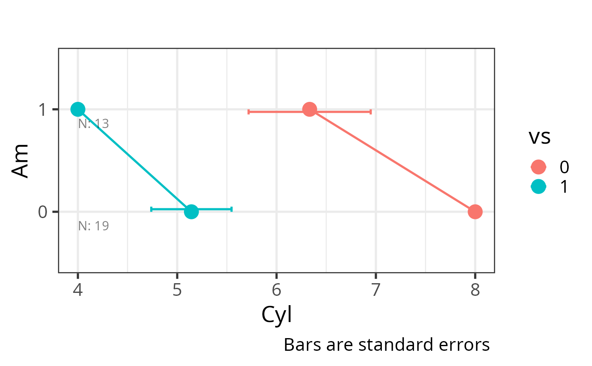
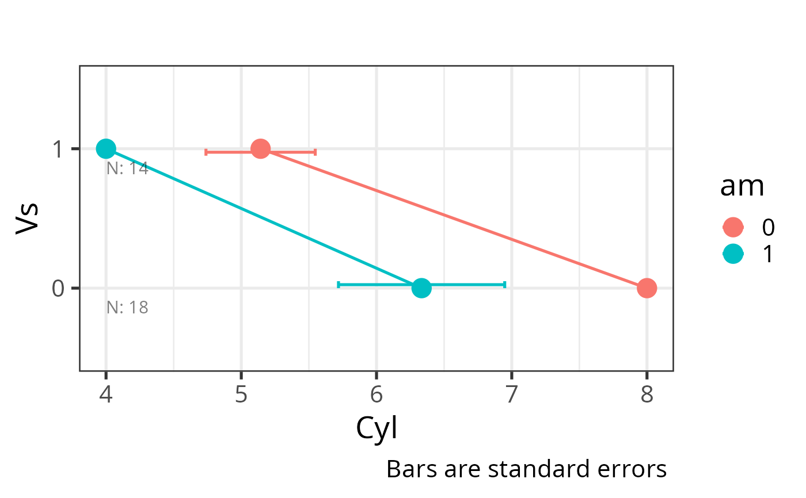
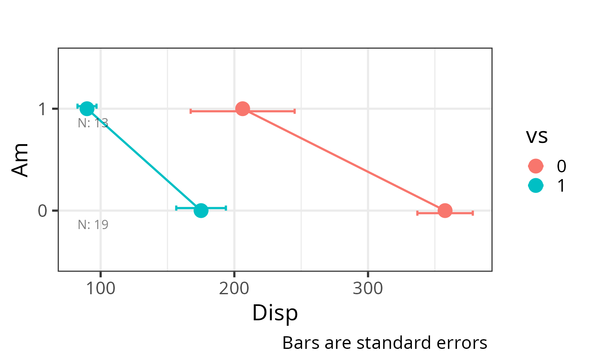
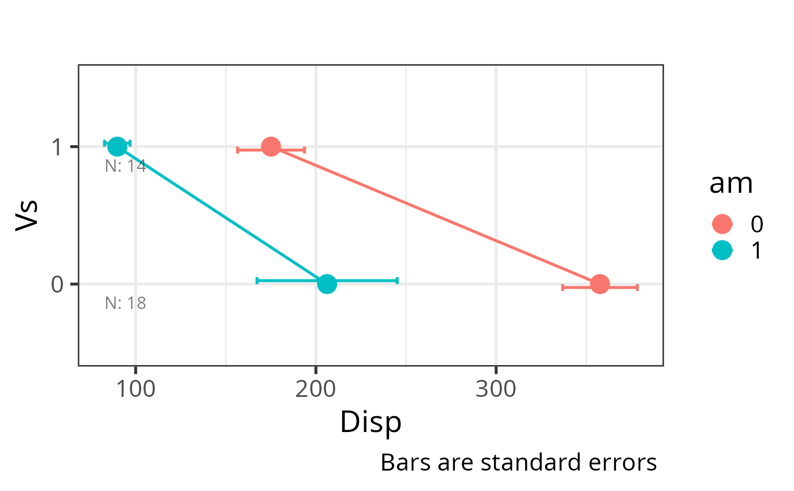
plot_interaction(df = mtcars, dv = 2:3, iv = 8:9, base_size = 20, type = "ci")
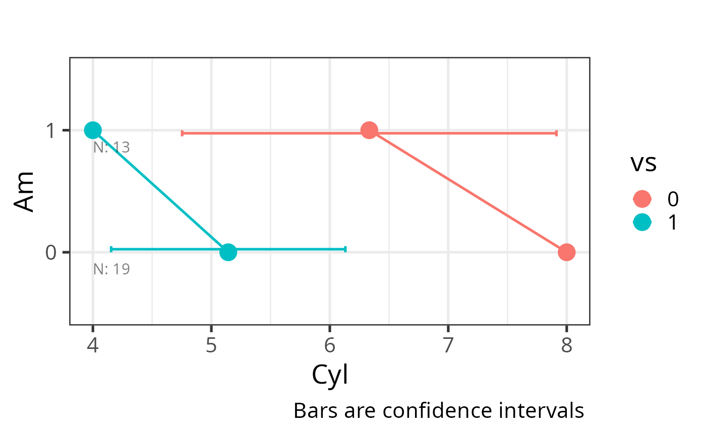
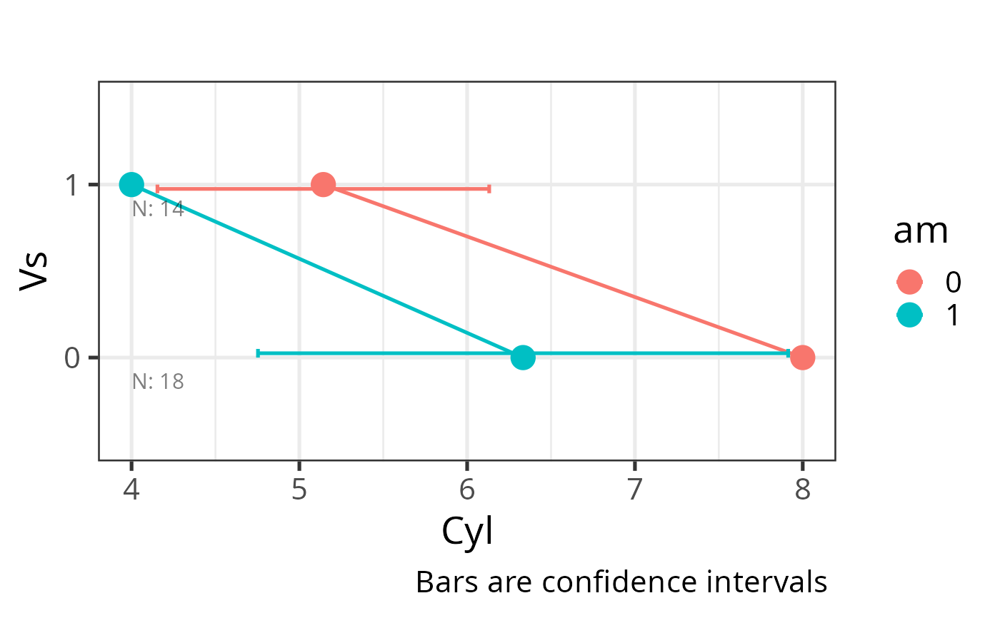
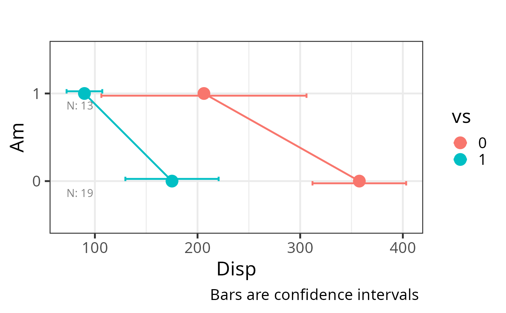
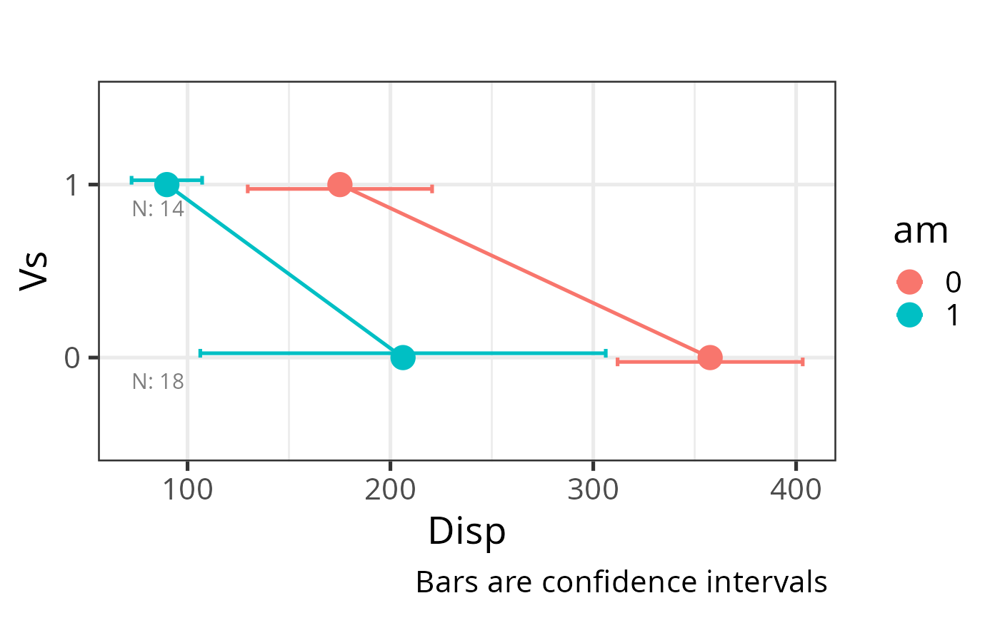
plot_interaction(df = mtcars, dv = 2:3, iv = 9:10, base_size = 20, type = "sd")
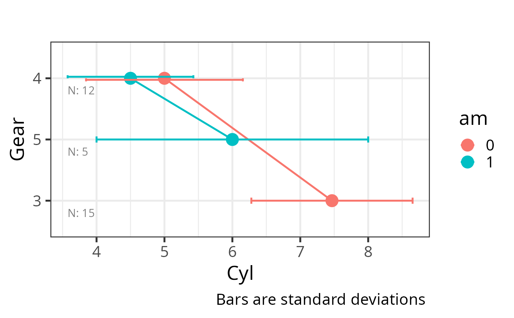
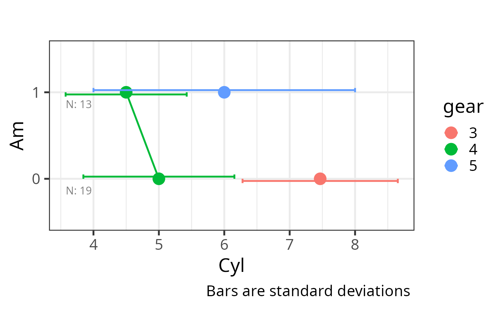
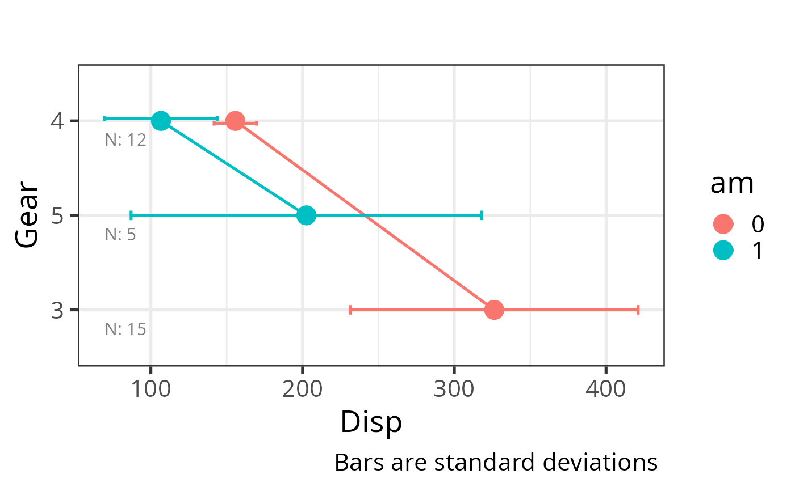
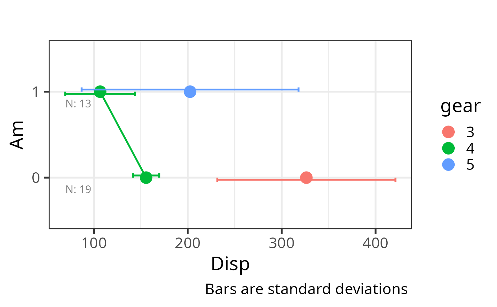
# No error bars, unordered factor axis
plot_interaction(df = mtcars, dv = 2, iv = 9:10, base_size = 20, type = "",
order_factor = FALSE)
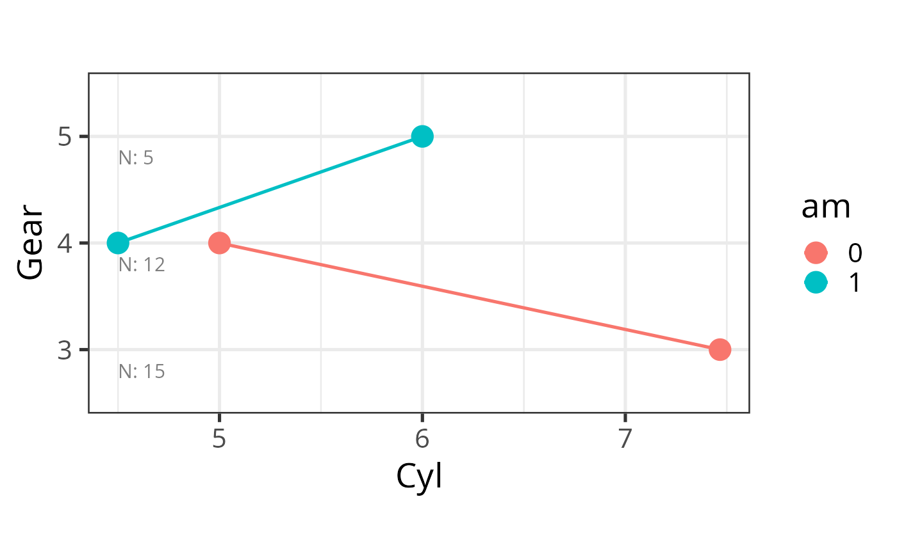
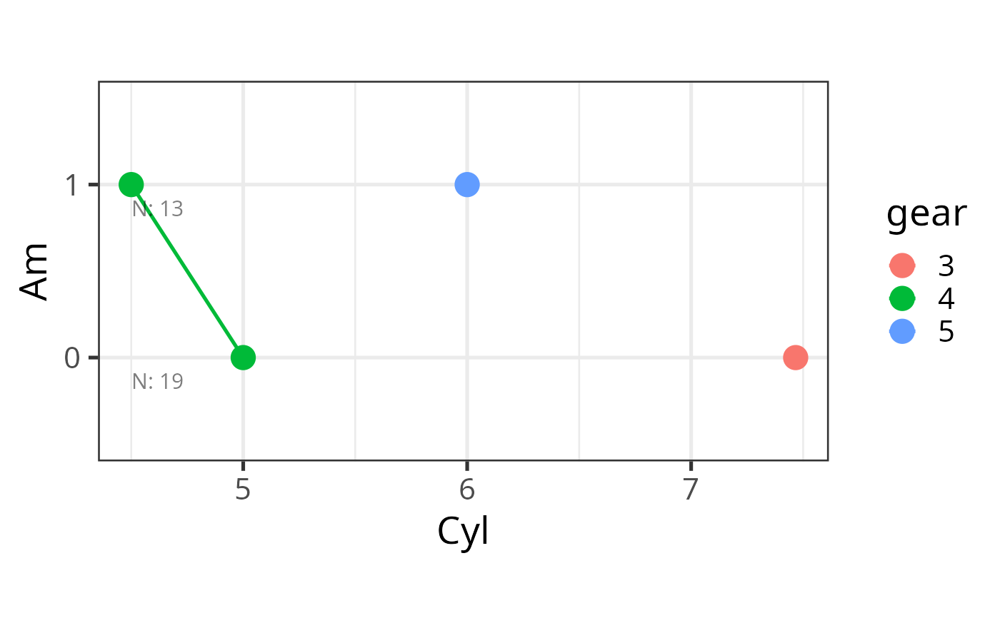